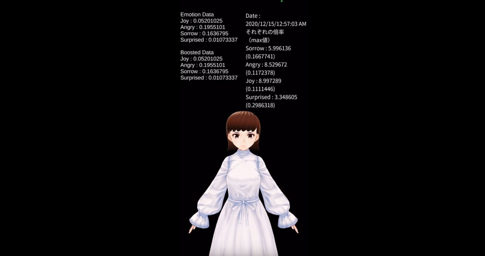
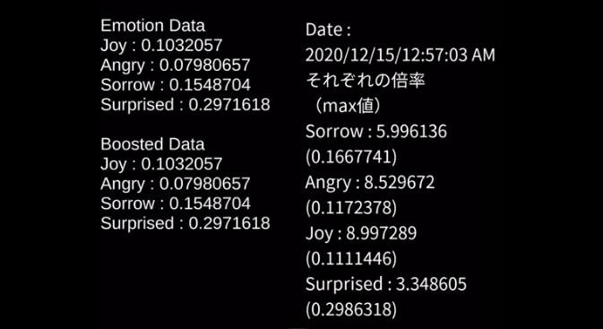

表情可視化アプリ（学部研究）

1. 作品概要
iPhone のカメラ入力から取れる顔のパーツ情報を利用して、FacialActionCodingSystem（FACS）にもとづいて表情を分析し、アバターに出力します。
初期値を登録しておくことにより、誰でも同様の強度で表情を出力できるよう、適切な倍率を算出します。
表情は VRM アバターを活用して出力を行っています。
2. 成果
- デモ動画（表情の値の例）
3. 開発背景
よりカジュアルなミーティングやオンライン会議では、参加者がカメラをオフにしたままミーティングを行う場面があり、その際、相手の表情がわからないことによるコミュニケーションが取りづらくなってしまうことが考えられます。
そこで、スマートフォンのカメラから得られる表情情報を用いて、表情データを分析し、アバターに表情として明確に出力して、コミュニケーションのための判断材料になりうるか検討しました。
4. 操作方法
- アプリ起動時に、導入に従って、無表情・表情ごとの初期値を設定します（値の保存が可能です）。
- 表情の可視化がスタートします。
5. 開発期間
3~4 ヶ月程度（2020 年）
6. 開発環境
Unity（iOS）
6.1. 使用ライブラリ
- ARFoundation
- ARKitXRPlugin
- ARKitFaceTracking
7. ポイント
初期表情の保存
現状表情ごとに値の登録が必要になっており、起動ごとに調整することは現実的でないため、初期表情の値を端末に保存することができます。
表情の正規化
登録した初期表情の値を用いて、アバター出力する表情の強度を正規化します。これにより、表情の表出が小さい人でも、適切な強度で出力することが可能になります。
無表情として登録した値からの差を用いて人による表情の強度を計算します。

8. 展望
- 表情データの時間軸を伴った蓄積
- 表情バリエーションの追加
- 現状 4 種（喜怒哀楽）しか対応していないため
- 初期表情登録フェーズの調整
- 表情数に比例して増加してしまうため